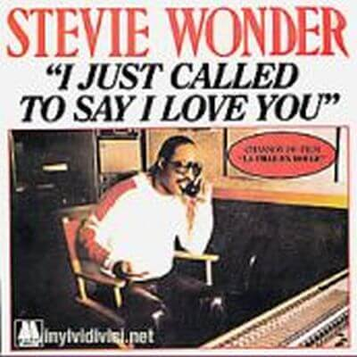

Video
Con "
I Just Called To Say I Love You" -sólo llamé para decirte que te quiero- alcanza el número 1 en las listas de éxito de medio mundo, consiguiendo tres nominaciones a los
Premios Grammy, un
Globo de Oro y el
Oscar a la mejor canción original.

Lyrics
No New Years Day to celebrate,
No chocolate covered candy hearts
to give away,
No first of spring,
no song to sing,
In fact, here's just another ordinary day.
No es Año Nuevo que celebrar
no hay corazones de dulce cubiertos de chocolate
para regalar
no es el inicio de la primavera,
ni canción para cantar
de hecho, éste es sólo otro día cualquiera
I just called to say I love you;
I just called to say how much I care;
I just called to say I love you,
And I mean it from the bottom of my heart.
Sólo llamé para decirte que te amo
sólo llamé para decir lo mucho que me importas
sólo llamé para decirte que te amo
y lo digo desde el fondo de mi corazón
No April rain, no flowers' bloom,
No wedding Saturday
within the month of June.
But what it is, is something true
Made up of these three words
that I must say to you.
No hay lluvia de Abril, ni flores brotando
tampoco bodas de sábado
en el mes de Junio.
Pero esto qué es, es algo verdadero
hecho de esas tres palabras
que debo decirte
I just called to say I love you;
I just called to say how much I care;
I just called to say I love you,
And I mean it from the bottom of my heart.
Sólo llamé para decirte que te amo
sólo llamé para decir lo mucho que me importas
sólo llamé para decirte que te amo
y lo digo desde el fondo de mi corazón
No summer's high, no warm July,
No harvest moon to light
one tender August night,
No autumn breeze, no falling leaves,
Not even time for birds
to fly to southern skies.
No es pleno verano, ni un cálido Julio
ni luna llena que ilumine
una tierna noche de Agosto
No hay brisa de otoño, ni hojas cayendo,
tampoco es tiempo en el que los pájaros
vuelan hacia los cielos del sur
No Libra sun, no Hallowe'en,
No giving thanks for all the Christmas joy
you bring,
But what it is, tho' old, so new,
To fill your heart
like no three words could ever do.
No hay sol de Libra, ni Halloween,
ni se dan las gracias por toda la alegría navideña
que transmites
pero esto qué es, aunque viejo, tan nuevo
para llenar tu corazón
como tres palabras no podrían hacer.
I just called to say I love you;
I just called to say how much I care;
I just called to say I love you,
And I mean it from the bottom of my heart.
I just called to say I love you;
I just called to say how much I care;
I just called to say I love you,
And I mean it from the bottom of my heart
of my heart, of my heart, of my heart
Sólo llamé para decirte que te amo
sólo llamé para decir lo mucho que me importas
sólo llamé para decirte que te amo
y lo digo desde el fondo de mi corazón
Sólo llamé para decirte que te amo
sólo llamé para decir lo mucho que me importas
sólo llamé para decirte que te amo
y lo digo desde el fondo de mi corazón
de mi corazón, de mi corazón, de mi corazón